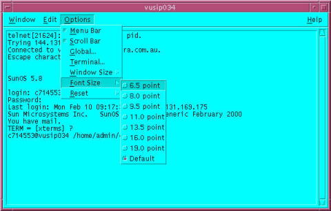
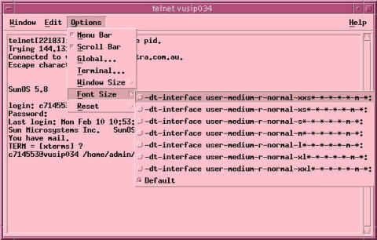

|
...making Linux just a little more fun! |
By Graham Jenkins |
Actually, it's not. The Common Desktop Environment (CDE) has been around for as long as some of those who will be reading this article. It was jointly developed by IBM, Sun, HP and Novell so as to provide a unified "look and feel" to users of their systems. It was also adopted by other companies (notably Digital Equipment). You can find further details at "IBM AIX: What is CDE?".
[Screenshot: a typical CDE screen]
The early versions of KDE appear to have been based on CDE, and the more recent releases of XFce have a look-and-feel which is very similar to that of CDE. A key difference here is that both KDE and XFce are Open Source developments.
One of the most-used CDE applications is probably its desktop terminal 'dtterm' which was based on 'xterm' with some extra menu-bar capabilities; its look is not unlike that of 'gnome-terminal'. There are also image-viewer, performance-monitoring, mail-reader and other useful tools.
I work in an environment where I am required to access and manage a number of Solaris and HP-UX servers. Most of my work is done at a NetBSD-based Xterminal, managed by a remote Solaris machine so that I have a CDE desktop. There are times it is managed instead by a remote Linux machine so that I have a Gnome desktop. And there are times (too many of them!) when I work from home, using a Linux machine with a locally-managed Gnome desktop.
It matters little where I am working; as soon as I open up a CDE utility such as 'dtterm', my Xserver starts looking for CDE-specific fonts. It seems that a number of vendor-supplied backup and other utilities also make use of these fonts.
In the case of 'dtterm' the end-result is that an attempt to select a different-sized font produces a selection list containing eight fonts, and seven of these can't be found. It is actually possible to get around this by redefining on the Solaris or HP host the names of the fonts which are used for the 'dtterm' application. This can be done at either a system-wide or a user-specific level; either way, it's hardly an elegant solution.
In the case of a splash-screen produced at CDE-login time, the result can be quite dire: the user is unable to read the login prompts or error messages! More recent versions of both Solaris and HP-UX get around this by attempting to append an entry like 'tcp/hpmachine:7100' to the font-path at login time. That's fine unless your site security policy prohibits the activation of font service on your Solaris and HP servers.
You can designate a couple of machines as font-servers for your site. These can be small dedicated machines, or they can offer other services (such as DHCP, NTP, etc.) as well. That's actually the way that it's done with 'thin' Xterminals from companies like IBM, NCD and HP.
There are several issues. First up, you have to actually install the CDE-fonts on the font-server machines; there may be some copyright issues here if you are installing (for instance) HP CDE fonts on Linux machines.
Something we noticed in practice is that the Xserver software we are using doesn't seem smart enough to do a transparent fail-over in the event of a single server disconnection. So what happens is that a user suddenly finds himself presented with a blank screen.
If you are working from home with a modem connection to the LAN on which your font-servers reside, it can take some time for required fonts to arrive when you start a 'dtterm' application.
This is certainly a possibility, and if you can live with the copyright issues, it will solve most of the problems outlined above. But it will require an extra 10Mb of filespace on each system.
The good news is that you don't have to lose sleep over the copyright issues. And you don't have to install strange fonts all over your font directories.
All you need do is identify some commonly-available fonts which closely match the CDE-specific fonts, and create one 'fonts.alias' file. Place it in an appropriate directory (e.g. '/usr/X11R6/lib/X11/fonts/local'), and run 'mkfontdir' in that directory. Then ensure that the directory name is included in your font-server configuration file (e.g. '/usr/X11R6/lib/X11/fs/config'). If your version of Linux (or NetBSD, or FreeBSD ..) doesn't include a term like 'unix/:7100' in its 'XF86Config' (or similar) server configuration file, you should place the name of your selected font directory in that configuration file.
Here's what the 'fonts.alias' file looks like. For clarity, I've shown just the first two and the last alias hereunder, and I've broken each line at the whitespace between the alias-name and it's corresponding real font. There wasn't a great deal of science went into the development of this file, although I did use a couple of simple scripts to assemble it. It was just a matter of finding, for each alias, a font having similar characteristics and size.
! XFree86-cdefonts-1.0-2 ! Font Aliases for Common Desktop Environment using XFree86 fonts. ! Graham Jenkins <grahjenk@au1.ibm.com> October 2001. -dt-application-bold-i-normal-serif-11-80-100-100-m-60-iso8859-1 "-adobe-courier-bold-o-normal--11-80-100-100-m-60-iso8859-1" -dt-application-bold-i-normal-serif-14-100-100-100-m-90-iso8859-1 "-adobe-courier-bold-o-normal--14-100-100-100-m-90-iso8859-1" ... "-dt-interface user-medium-r-normal-xxl serif-21-210-72-72-m-140-hp-roman8" "-b&h-lucidatypewriter-medium-r-normal-sans-24-240-75-75-m-140-iso8859-1"
OK, so you've read this far, and you're still asking "Why Should I Care?". My guess is that eighty percent of you have never used CDE and are unlikely to use it in the future.
But what I can guarantee is that most of you are going to run an application one day, and wonder why it's fonts don't display or scale properly. My hope is that when that happens, you'll recall what you've read here - and apply it to the creation of an appropriate 'fonts.alias' file as outlined above.
![[picture]](../gx/2003/authors/Graham_Jenkins.jpg) Graham is a Unix Specialist at IBM Global Services, Australia. He lives
in Melbourne and has
built and managed many flavors of proprietary and open systems on several
hardware platforms.
Graham is a Unix Specialist at IBM Global Services, Australia. He lives
in Melbourne and has
built and managed many flavors of proprietary and open systems on several
hardware platforms.
{kind=link}